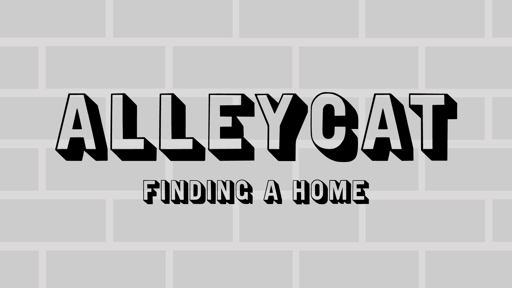

Welcome to AlleyCat: Finding a Home! This is a Choose Your Own Adventure Game that centers around a stray cat trying to find a home. There are several ways to end up in a home, because sometimes a home is found in a chosen family or a home ends up finding you instead. Are you ready to jump in?